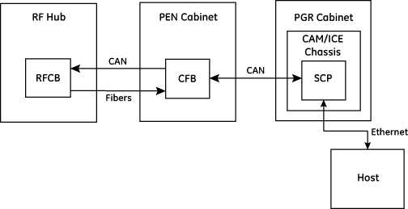

- 00000018WIA304CDD20GYZ
- id_131064294.5
- Jul 28, 2025 6:23:55 PM
Multicoil bias diagnostics (RRx)
Diagnostic links
Diagnostics > System Function > RF > Multicoil Bias Diagnostic
Diagnostics > Hardware Location > Magnet Room > Multicoil Bias Diagnostic

Purpose
The multicoil bias diagnostic is used to troubleshoot multicoil (MC) bias faults with the coil that results in the faults connected to the system. Any coil equipped with working coil ID can be connected to troubleshoot any reported MC bias fault. The advantage of this diagnostic is that it clearly reports a pass or fail summary assessment of all the results and prints screen text to indicate any failing channels and parameters.
The diagnostic detects the coils that are connected, obtains the multicoil bias settings for those coils from the coil database, and runs through the same tests that are done before normal scanning. These tests are run three times and a PASSED (blue text) or FAILED (red text) assessment of test results is shown. Any tests reporting fail also indicate the failing channels and parameters. In addition, all of the diagnostic screen output and resultant multicoil bias voltages are written to a log text file.
The system detects three types of multicoil bias faults:
-
Open circuit fault – This fault is detected when multicoil bias current is applied, and the voltage generated is 80% of the rail voltage or greater. The rail voltage is +/- 10V. This fault can only be detected on a connected coil channel.
-
Short circuit fault – This fault is detected when multicoil bias voltage is applied, and the current generated is greater than 70 mA. This fault can be detected on either a connected coil channel, or on an unconnected channel.
-
Tolerance/drive fault – This fault is detected when multicoil bias voltage is applied, and the voltage read back is not within system tolerances, but only if a short circuit is not detected. This fault can be detected on either a connected coil channel, or on an unconnected channel.
Components tested
-
RF hub RFCB
-
RF hub MCDB
-
RF hub RFSB or RFSBv (for this document, RFSB and RFSBv are considered to be the same, even though the connectors are different)
-
RF hub RFCB to LPCA port A 37 pin cable
-
MNS upconverter (when present)
-
Reroute box (when present)
-
Reroute box to port A, P1-P4 8W8 and 16W16 cables (when present)
-
Port A, P1-P2 connectors
-
P3-P4 connectors (when present)
-
Coil connected to port A, P1-P4
-
RF control board (RFCB) only when testing HD A connector
Requirements
None
Block diagrams



Test sequence
If a log file extension is desired to track test results or correlate results with an FE troubleshooting action, enter up to a 10-character extension in the File Extension window.
-
Connect the coil(s) to the system to be tested, or disconnect all coils from the A and P ports to test the system.
-
Run the multicoil bias diagnostic.
-
When the diagnostic completes, the log it generates is located in /usr/g/service/datamine.
Expected results
When the diagnostic starts, it opens a log file and shows the location. All of the diagnostic screen outputs can be reviewed later in this log file.
The diagnostic then communicates from the SCP (SCP board on CAM or SCP service on ICE) to the RF hub and shows coil information for each coil detected, or shows a message saying no coils are detected.
If all hardware communication is successful, and the information about the connected coils can be retrieved from the coil database on the host, the diagnostic commands the RF hub to start the multicoil bias checks.
After the multicoil bias checks are complete, the results are shown.
For any coil connected, the diagnostic shows either a PASSED or FAILED message for each multicoil bias channel in the coil. The PASSED message is only shown if there were no multicoil bias faults detected on that channel in all three bias checks.
Otherwise, the diagnostic shows a FAILED message for any channel in the system that failed without a coil connected. If no unconnected channels in the system failed, one message is shown saying all unconnected channels PASSED.
For any failed channel, the diagnostic also shows the bias mapping and the RFSB mapping for that channel. For any channel in the system, the bias mapping points to a MCDB or RFCB bias module and channel that is providing that bias. The RFSB mapping points to any RFSBs and connectors and channels that the given bias is supplied to.
After the bias check results are shown, the RF hub board HART information and all multicoil bias check data is written to the log file.
| Diagnostic results | Description | GE field action |
|---|---|---|
| RF hub communication failure | The SCP cannot communicate to the RF hub over the CAN link. | Run the RF hub CAN fiber loopback diagnostic. |
| Coil ID invalid or coil ID failure | The RF hub reports an invalid coil ID or a coil ID failure. | Run the coil ID functional diagnostic. |
| RF hub power supply failure | The RF Hub cannot run the bias checks because a RF hub power failure was detected. | Run the RF hub board level diagnostic. Check SRPS power output. |
| Open circuit fault | An open circuit fault is detected on a coil channel. | If another coil is available with the same multicoil bias channels,
run the diagnostic again with that coil. If that coil is known to
be good, and an open circuit fault is still seen, then the problem
is on the system. Use the coil datapath diagnostic to troubleshoot system open circuits, or to prove that the system does not have open circuits. |
| Short circuit fault on a connected coil | A short circuit fault is detected on a coil channel. | Remove the coil and run the diagnostic again. If the short
circuit fault is still present, then it is not an issue with the coil. If the short circuit fault is not present without the coil, then it is likely that it is a short circuit in the coil. |
| Short circuit fault without a connected coil | A short circuit fault is detected on a channel that does not have a coil connected. | Use the coil datapath diagnostic to troubleshoot system short
circuit faults. Alternatively, the multicoil bias diagnostic can be run with the same troubleshooting procedure as the coil datapath diagnostic to isolate the short circuit in the system. To do this, disconnect ports or cables at the same location as the coil datapath diagnostic and run the multicoil bias diagnostic. If the short circuit goes away at any point, it means that it was in the parts or the interface to the parts that were disconnected. Check for bent pins at every connection. Additionally, the multicoil bias diagnostic can be used to diagnose short circuit faults within the RF hub. If the short circuit has been isolated to the RF hub (fault is still seen with the RFCB port A 37-pin cable and all RFSB cables disconnected), then the following steps can be run to diagnose:
|
| Tolerance/drive fault | A tolerance/drive fault is detected. | Run the coil datapath diagnostic to diagnose. |
Finalization
-
Do a TPS reset.
-
Do a check scan. See Doing a check scan.